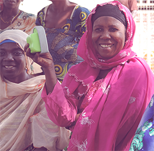

Features
Accessible and Easy to Use
When you turn the device on, it speaks to guide you through performing tasks like listening and recording. Users navigate the audio interface which is localized in their native dialect. Even people with no prior experience with technology can learn to use the devices from their peers.
Runs on Batteries
The Talking Book does not require grid electricity, meaning people use commonly available batteries to listen repeatedly in their home.
Works by Touch in the Dark
By feeling indentations in the buttons, users listen to content at night without lights. The indentations also mean that people who are visually disabled can navigate the audio menu to find the information they need to hear
Unique from a Mobile Phone
Mobile phone solutions require funds for network time and expensive handsets. These solutions excel at accessing simple and time-critical information but are less effective as teaching systems. Adding Talking Books to a mobile-based intervention combines timely content distribution with the means to play lengthier content on-demand at no cost.
Augments Radio Programs
While radio programs reach many people in one broadcast, they cannot be replayed or shared with those who were unavailable. We have observed that users need to listen to the some recordings multiple times before incorporating the new practices into their lives. Adding Talking Books to a radio-based intervention combines their broadcast capability with a network of devices that act as local audio libraries.
Increase Impact
On-demand access to content Ensure your information is heard exactly as you intend by giving beneficiaries on demand access. The Talking Book disseminates complex or simple information in a consistent way—each Talking Book can contain 35 to 140 hours of information. Beneficiaries can listen to the messages they need, when they need it, and as many times as necessary to learn new practices, to prevent disease, or to produce more crops.
Easy to Record New Content
You can collect feedback from the people you serve about any topic you would like. Ask for their opinions on the messages themselves or on your program. By incorporating their ideas, your organization will be able to refine your effectiveness over time. Beneficiaries can also create their own messages to share local expertise with each other and capture cultural knowledge and stories—many of which have never been recorded before in history.
Usage Statistics and User Ratings
How many people have listened to each message? What do they think of it? These are all questions you can answer through the usage statistics on each Talking Book.
